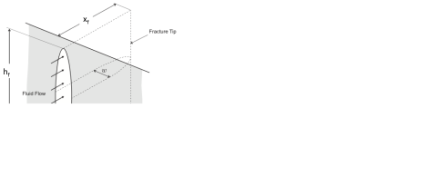

Next: 7.5 Practical aspects of Up: 7. Hydraulic fracturing Previous: 7.3 Hydraulic fracture design: Contents
The objective of multistage hydraulic fracturing is to increase the surface area of the reservoir in contact to the wellbore. Proppants help keep high conductivity in the newly created fractures. The main target of multistage hydraulic fracturing are hydrocarbon source rocks. Other hydrocarbon-bearing tight formations can be also stimulated through multistage hydraulic fracturing. An introductory animation video from Marathon is available here: https://www.youtube.com/watch?v=VY34PQUiwOQ.
Horizontal wellbores help create multiple fractures from a single wellbore whenever
 .
Either for normal faulting or strike-slip regimes (and assuming
.
Either for normal faulting or strike-slip regimes (and assuming  is a principal stress - see Fig. 7.23):
is a principal stress - see Fig. 7.23):
 , and
, and
 .
.
The simplest models of hydraulic fracturing assume planar bi-wing fractures from each stage.
This geometry permits defining one more parameter in addition to
 : the distance between fracture stages
: the distance between fracture stages  (Fig. 7.24).
One may think that reducing is better to increase surface area.
However, placing stages too close may cause non-planar fractures to bump into each other and also require more investment.
The following subsection deals with this topic.
Placing a large number of fractures will require most times increasing the wellbore length.
This is another design parameter, the length of the lateral
(Fig. 7.24).
One may think that reducing is better to increase surface area.
However, placing stages too close may cause non-planar fractures to bump into each other and also require more investment.
The following subsection deals with this topic.
Placing a large number of fractures will require most times increasing the wellbore length.
This is another design parameter, the length of the lateral  .
.
Last, usually multiple horizontal wellbores are drilled next to each other to cover the reservoir volume.
Wells are usually placed parallel to each other and at the same depth spaced by inter-wellbore distance  (Fig. 7.25).
In thick formations, wells may be placed at different alternating depths.
The location on surface from where the wellbores are drilled and fractured is called a drilling/fracturing pad.
(Fig. 7.25).
In thick formations, wells may be placed at different alternating depths.
The location on surface from where the wellbores are drilled and fractured is called a drilling/fracturing pad.
 |
Multistage hydraulic fracturing in reverse faulting may require vertical wellbores instead of horizontal wellbores. Several source rocks in Argentina, China, and Australia are subjected to mixed reverse faulting and strike-slip conditions changing with depth. The hydraulic fracturing geometry is less straight-forward in these places than in others with well defined normal faulting regime.
Multistage hydraulic fracturing involves multiples fracture spaced at a characteristic distance between fractures .
This distance can be attempted by placing one fracture per stage. Hence, the distance between fractures is designed to be the distance between stages.
However, if fractures are forced to grow to close to each other, they will interact due to the strains caused by placing a fracture prior to the other (Figure 7.26).
The change of stress around a fracture is often referred in practice as “stress shadow”.
The minimum distance at which two consecutive planar fractures can be placed depends on:
 in normal faulting stress regime)
in normal faulting stress regime)
The solution of change of stress due to placement of an infinitely long fracture (in direction  ) is shown in Figure 7.26.
This is Sneddon's solution for stresses around an elliptical crack in plane-strain (plane ).
A net-pressure
) is shown in Figure 7.26.
This is Sneddon's solution for stresses around an elliptical crack in plane-strain (plane ).
A net-pressure  higher than the difference between the differential stress (
higher than the difference between the differential stress ( in direction and in direction
in direction and in direction  ) can make the principal stresses change directions so that may change to direction in the vicinity of the fracture.
) can make the principal stresses change directions so that may change to direction in the vicinity of the fracture.
Hence, the distance at which a new consecutive fracture may be placed is
|  | (7.26) |
where is proportional to the fracture width and rock stiffness ( ).
The exact value depends on the full solution of stress around a fracture (Fig. 7.26 is a simplification).
Typical net pressures are in the order of a few-hundred-psi, and the differential stress varies from location to location.
Places with small stress anisotropy (
).
The exact value depends on the full solution of stress around a fracture (Fig. 7.26 is a simplification).
Typical net pressures are in the order of a few-hundred-psi, and the differential stress varies from location to location.
Places with small stress anisotropy (
 psi) are prone to significant fracture interference.
psi) are prone to significant fracture interference.
Fig. 7.27 shows an example of fracture trajectory simulation taking into account “stress shadows”.
In this example the fracture width is fixed to 4 mm, which results in  150 psi higher than
100 psi.
Hence, stress rotation occurs when fractures are placed too close.
In this particular example results in non-planar fractures that do not extend to the desired fracture direction and length as expected.
150 psi higher than
100 psi.
Hence, stress rotation occurs when fractures are placed too close.
In this particular example results in non-planar fractures that do not extend to the desired fracture direction and length as expected.
![\includegraphics[scale=0.45]{.././Figures/split/9-FracInterference.pdf}](img1157.svg) |
A practical alternative to avert the effects of stress shadows is “zipper fracturing”, which involves three or more parallel wellbores and alternate sequencing to cancel out stress shadow effects (Fig. 7.28). The idea is to reduce fracture spacing by placing fractures (e.g. number 3) only after nearby fractures have been made and propped in adjacent wells (1, 2, 1', and 2'). Sometimes, fractures in one well may run into another fractured well. This is called a “fracture hit”. Optimizing wellbore spacing, stage separation and sequencing is critically important to maximize the NPV of multistage fracturing completion work.
Recent completion designs give more “freedom” to fractures to develop by placing multiple perforation clusters in a single stage (Fig. 7.29). This design is called “multicluster fracturing”. The result is that fractures compete with each other to grow in the relatively close to each other. Sometimes, stress interference may halt the propagation of nearby fractures resulting in long and short fractures. In some sense, this design favors “survival of the fittest” rather than enforcing a given spacing between fractures.
Typical modern designs of multicluster fracturing in the Permian Basin have:
 10,000 ft,
10,000 ft,
 ,
,
So far, we have assumed hydraulic fractures are single fractures with no branching or bifurcation. This is a conceptual and idealized shape of fluid-driven fractures.
Modern monitoring tools permit observing that the rock fails in shear around hydraulic fractures. Hence, hydraulic fracturing seems to create (or re-activate) other fractures in addition to the main hydraulic fracture (Fig. 7.30).
The evidence for these new fractures consists of elastic waves generated during failure (shear slippage) captured as seismic activity on geophones installed on surface and in observation wells (Fig. 7.31).
The seismic activity generated from hydraulic fracturing has a magnitude usually lower than  in the Richter scale (https://en.wikipedia.org/wiki/Richter_magnitude_scale), and thus is termed “microseismicity”.
However, larger seismicity magnitude has been observed in some places and it is often due to fracturing fluids reaching a major fault that might have not been identified previously.
Other major seismicity is often the result of continuous injection of waste water, rather than injection during hydraulic fracturing per-se.
in the Richter scale (https://en.wikipedia.org/wiki/Richter_magnitude_scale), and thus is termed “microseismicity”.
However, larger seismicity magnitude has been observed in some places and it is often due to fracturing fluids reaching a major fault that might have not been identified previously.
Other major seismicity is often the result of continuous injection of waste water, rather than injection during hydraulic fracturing per-se.
The cloud of microseismic emission is usually referred as the “Stimulated Reservoir Volume” (SRV measured in volume units). This volume is correlated to the volume that will produce hydrocarbons. The correlation is far from good, but in general, the larger the SRV, the larger the EUR. Hence, a simplified model could calculate the EUR in an unconventional oil formation as
 |
(7.27) |
TBD


![\includegraphics[scale=0.65]{.././Figures/split/9B-20.pdf}](img1158.svg)
![\includegraphics[scale=0.45]{.././Figures/split/9-MulticlusterFracturing.PNG}](img1160.svg)
![\includegraphics[scale=0.65]{.././Figures/split/9B-21.pdf}](img1161.svg)
![\includegraphics[scale=0.65]{.././Figures/split/9-MicroSeismicity.PNG}](img1163.svg)